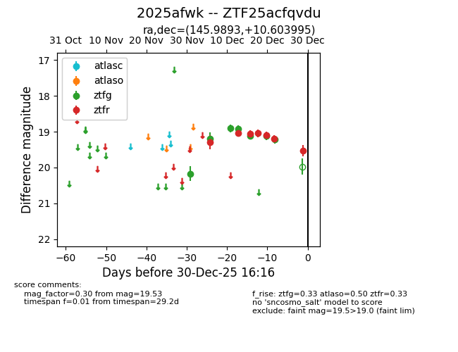
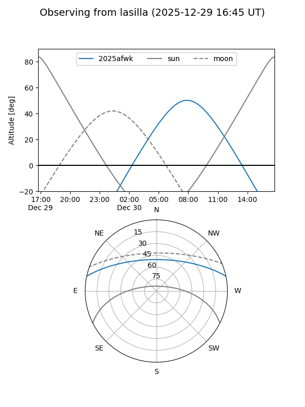
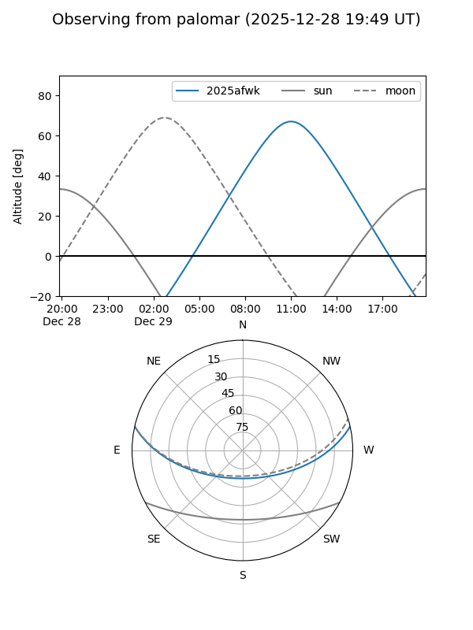

2025afwk
Target 2025afwk at 2025-12-29 11:13
Aliases and brokers:
FINK: fink-portal.org/ZTF25acfqvdu
Lasair: lasair-ztf.lsst.ac.uk/objects/ZTF25acfqvdu
ALeRCE: alerce.online/object/ZTF25acfqvdu
TNS: wis-tns.org/object/2025afwk
YSE: ziggy.ucolick.org/yse/transient_detail/2025afwk
alt names
ZTF25acfqvdu (ztf,fink_ztf)
2025afwk (tns,yse)
Coordinates:
equatorial (ra, dec) = 145.9893,+10.60399
equatorial (HMS+DMS) = 09:43:57.44,+10:36:14.38
galactic (l, b) = (224.1779,+42.99726)
Flags:
Photometry:
last atlaso=nan, ztfg=19.22, ztfr=19.53
1 atlaso, 7 ztfg, 7 ztfr detections
Lightcurve

Visibility


Additional plots